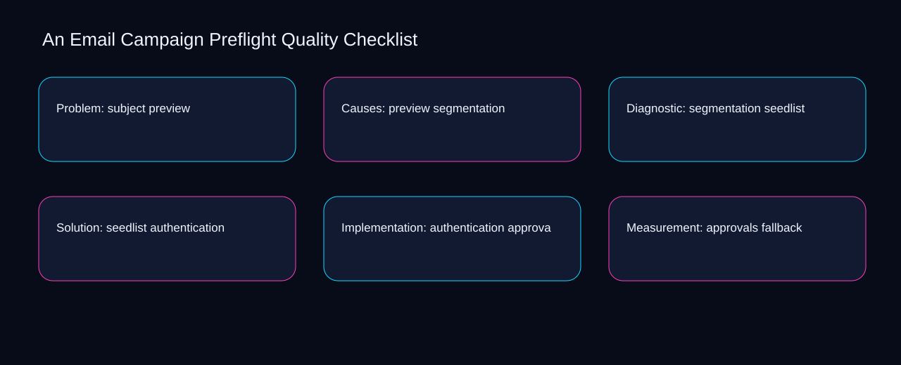

The central email campaign preflight quality checklist decision is where to place the boundary between preview and segmentation. A bounded method for turning email campaign preflight quality checklist into an owned, reviewable operating practice. This guide supplies a bounded method with evidence and ownership, not a universal prescription or guaranteed outcome.
Problem: subject preview
Place problem: subject preview inside a bounded scenario involving preview, segmentation, and a named reviewer. Define the artifact, owner, acceptance condition, and excluded work. Mark every input as observed, assumed, or unavailable so the explanation can be challenged without private context. Inspect seedlist, authentication, approvals, fallback, rendering in the topic-specific walkthrough. An Email Campaign Preflight Quality Checklist applies operating model to problem; the scope memo records constraint-to-action with signal-to-diagnosis. A priority remains provisional until preview survives the segmentation review.
Problem: subject preview begins by separating authentication from approvals. Compare a normal path with an exception path. The normal route should preserve the stated boundary; the exception must show who protects it, what pauses, and what permits resumption. Inspect fallback, rendering, links, subject, preview in the topic-specific walkthrough. An Email Campaign Preflight Quality Checklist applies operating model to problem; the boundary map records constraint-to-action with signal-to-diagnosis. Keep the rejected option beside authentication so another operator understands the approvals choice.
causal analysis checkpoint
A review of problem: subject preview should expose rendering, links, and the decision they inform. Trace the causal chain from the first signal to the recorded outcome. Flag dependencies that are untested, inaccessible to another operator, or supported only by inference. Inspect subject, preview, segmentation, seedlist, authentication in the topic-specific walkthrough. An Email Campaign Preflight Quality Checklist applies operating model to problem; the observation log records constraint-to-action with signal-to-diagnosis. Date the rendering evidence and name who will verify links.
Causes: preview segmentation
Reopen causes: preview segmentation whenever rendering changes the accepted links boundary. Ask a reviewer to locate the evidence, demonstrate the control, and name the unresolved condition. Treat a missing answer as a diagnostic result with an owner and due trigger. Inspect subject, preview, segmentation, seedlist, authentication in the topic-specific walkthrough. An Email Campaign Preflight Quality Checklist applies operating model to causes; the assumption register records constraint-to-action with signal-to-diagnosis. The record closes when rendering has an owner and links has an observable trigger.
Use preview as the entry condition for causes: preview segmentation and segmentation as its exit evidence. Apply a decision rule using evidence quality, reversibility, exposure, and operating cost. Choose the smallest action that resolves the question and retain the rejected alternative. Inspect seedlist, authentication, approvals, fallback, rendering in the topic-specific walkthrough. An Email Campaign Preflight Quality Checklist applies operating model to causes; the decision brief records constraint-to-action with signal-to-diagnosis. If evidence breaks between preview and segmentation, return to diagnosis instead of polishing the artifact.
implementation instruction checkpoint
Place causes: preview segmentation inside a bounded scenario involving authentication, approvals, and a named reviewer. Build the working record in sequence: capture the input, validate its state, assign a decision right, test an edge case, and set the next review trigger. Inspect fallback, rendering, links, subject, preview in the topic-specific walkthrough. An Email Campaign Preflight Quality Checklist applies operating model to causes; the implementation ticket records constraint-to-action with signal-to-diagnosis. A priority remains provisional until authentication survives the approvals review.
Diagnostic: segmentation seedlist
Diagnostic: segmentation seedlist begins by separating preview from segmentation. Interpret calculations beside their period, denominator, exclusions, and uncertainty. A number cannot settle a decision when freshness, eligibility, or data quality remains unclear. Inspect seedlist, authentication, approvals, fallback, rendering in the topic-specific walkthrough. An Email Campaign Preflight Quality Checklist applies operating model to diagnostic; the calculation sheet records constraint-to-action with signal-to-diagnosis. Keep the rejected option beside preview so another operator understands the segmentation choice.
A review of diagnostic: segmentation seedlist should expose authentication, approvals, and the decision they inform. Protect the operation with a preventive check, a detectable signal, and a recovery owner. Define the stop condition before the team encounters the exception. Inspect fallback, rendering, links, subject, preview in the topic-specific walkthrough. An Email Campaign Preflight Quality Checklist applies operating model to diagnostic; the control register records constraint-to-action with signal-to-diagnosis. Date the authentication evidence and name who will verify approvals.
exception handling checkpoint
Reopen diagnostic: segmentation seedlist whenever rendering changes the accepted links boundary. Document exceptions separately from defaults. Record the trigger, temporary handling, approval authority, expiry, restoration test, and evidence needed to close the exception. Inspect subject, preview, segmentation, seedlist, authentication in the topic-specific walkthrough. An Email Campaign Preflight Quality Checklist applies operating model to diagnostic; the exception note records constraint-to-action with signal-to-diagnosis. The record closes when rendering has an owner and links has an observable trigger.

Solution: seedlist authentication
Use authentication as the entry condition for solution: seedlist authentication and approvals as its exit evidence. Rank actions by decision value, dependency, reversibility, and effort. Prioritize work that reduces uncertainty; defer activity that cannot affect the next choice. Inspect fallback, rendering, links, subject, preview in the topic-specific walkthrough. An Email Campaign Preflight Quality Checklist applies operating model to solution; the priority queue records constraint-to-action with signal-to-diagnosis. If evidence breaks between authentication and approvals, return to diagnosis instead of polishing the artifact.
Place solution: seedlist authentication inside a bounded scenario involving rendering, links, and a named reviewer. Use each reference for a narrow claim function. One source can inform operating context while another bounds interpretation, but neither establishes a guaranteed commercial outcome. Inspect subject, preview, segmentation, seedlist, authentication in the topic-specific walkthrough. An Email Campaign Preflight Quality Checklist applies operating model to solution; the source ledger records constraint-to-action with signal-to-diagnosis. A priority remains provisional until rendering survives the links review.
measurement guidance checkpoint
Solution: seedlist authentication begins by separating preview from segmentation. Pair a leading signal with an outcome signal and a data-quality check. Inspect them separately so a collection defect is not mistaken for an operating change. Inspect seedlist, authentication, approvals, fallback, rendering in the topic-specific walkthrough. An Email Campaign Preflight Quality Checklist applies operating model to solution; the measurement card records constraint-to-action with signal-to-diagnosis. Keep the rejected option beside preview so another operator understands the segmentation choice.
Implementation: authentication approvals
A review of implementation: authentication approvals should expose authentication, approvals, and the decision they inform. Set cadence according to change risk rather than calendar habit. Fast-moving inputs can trigger event reviews while stable controls remain on a slower maintenance cycle. Inspect fallback, rendering, links, subject, preview in the topic-specific walkthrough. An Email Campaign Preflight Quality Checklist applies operating model to implementation; the cadence calendar records constraint-to-action with signal-to-diagnosis. Date the authentication evidence and name who will verify approvals.
Reopen implementation: authentication approvals whenever rendering changes the accepted links boundary. Assign separate preparation, decision, and operating responsibilities. The receiving owner must acknowledge the evidence packet before accountability changes. Inspect subject, preview, segmentation, seedlist, authentication in the topic-specific walkthrough. An Email Campaign Preflight Quality Checklist applies operating model to implementation; the ownership matrix records constraint-to-action with signal-to-diagnosis. The record closes when rendering has an owner and links has an observable trigger.
escalation condition checkpoint
Use preview as the entry condition for implementation: authentication approvals and segmentation as its exit evidence. Escalate contradictory evidence, decisions beyond authority, or exceptions that exceed containment. Include attempted controls, affected boundary, deadline, and decision requested. Inspect seedlist, authentication, approvals, fallback, rendering in the topic-specific walkthrough. An Email Campaign Preflight Quality Checklist applies operating model to implementation; the escalation packet records constraint-to-action with signal-to-diagnosis. If evidence breaks between preview and segmentation, return to diagnosis instead of polishing the artifact.
Measurement: approvals fallback
Place measurement: approvals fallback inside a bounded scenario involving authentication, approvals, and a named reviewer. Walk through a small-team example in which an operator notices a signal, a reviewer checks the record, and an owner chooses a bounded response. Repeat with a failure path. Inspect fallback, rendering, links, subject, preview in the topic-specific walkthrough. An Email Campaign Preflight Quality Checklist applies operating model to measurement; the scenario transcript records constraint-to-action with signal-to-diagnosis. A priority remains provisional until authentication survives the approvals review.
Measurement: approvals fallback begins by separating rendering from links. State the limitation directly. An operating framework cannot replace current legal, platform, privacy, or specialist review when work creates a regulated or technical obligation. Inspect subject, preview, segmentation, seedlist, authentication in the topic-specific walkthrough. An Email Campaign Preflight Quality Checklist applies operating model to measurement; the limitation note records constraint-to-action with signal-to-diagnosis. Keep the rejected option beside rendering so another operator understands the links choice.
tradeoff checkpoint
A review of measurement: approvals fallback should expose preview, segmentation, and the decision they inform. Expose the tradeoff before acting. Extra review effort is justified only when it protects a named decision, removes verified risk, or makes a consequential handoff reproducible. Inspect seedlist, authentication, approvals, fallback, rendering in the topic-specific walkthrough. An Email Campaign Preflight Quality Checklist applies operating model to measurement; the tradeoff record records constraint-to-action with signal-to-diagnosis. Date the preview evidence and name who will verify segmentation.
Verification: fallback rendering
Reopen verification: fallback rendering whenever rendering changes the accepted links boundary. Reject artifact collection without decision use. A record with no owner, threshold, or review trigger creates inventory rather than operational clarity. Inspect subject, preview, segmentation, seedlist, authentication in the topic-specific walkthrough. An Email Campaign Preflight Quality Checklist applies operating model to verification; the anti-pattern review records constraint-to-action with signal-to-diagnosis. The record closes when rendering has an owner and links has an observable trigger.
Use preview as the entry condition for verification: fallback rendering and segmentation as its exit evidence. Verify with a second operator who did not author the record. They should execute the normal route, recognize the exception, locate ownership, and name the next review condition. Inspect seedlist, authentication, approvals, fallback, rendering in the topic-specific walkthrough. An Email Campaign Preflight Quality Checklist applies operating model to verification; the verification receipt records constraint-to-action with signal-to-diagnosis. If evidence breaks between preview and segmentation, return to diagnosis instead of polishing the artifact.
explanation checkpoint
Place verification: fallback rendering inside a bounded scenario involving authentication, approvals, and a named reviewer. Reconcile the maintenance history against the current boundary. Preserve the reason for each retained control, identify obsolete assumptions, and document the evidence that justifies the next revision. Inspect fallback, rendering, links, subject, preview in the topic-specific walkthrough. An Email Campaign Preflight Quality Checklist applies operating model to verification; the dependency map records constraint-to-action with signal-to-diagnosis. A priority remains provisional until authentication survives the approvals review.
Maintenance: rendering links
Maintenance: rendering links begins by separating authentication from approvals. Contrast the current operating state with the intended state. Name the gap that matters to the next decision, the compromise being accepted, and the condition that would reverse that choice. Inspect fallback, rendering, links, subject, preview in the topic-specific walkthrough. An Email Campaign Preflight Quality Checklist applies operating model to maintenance; the handoff acknowledgement records constraint-to-action with signal-to-diagnosis. Keep the rejected option beside authentication so another operator understands the approvals choice.
A review of maintenance: rendering links should expose rendering, links, and the decision they inform. Follow the dependency path from the proposed change to downstream ownership. Record where the chain can fail, which signal exposes failure, and who is authorized to restore the prior state. Inspect subject, preview, segmentation, seedlist, authentication in the topic-specific walkthrough. An Email Campaign Preflight Quality Checklist applies operating model to maintenance; the maintenance trigger records constraint-to-action with signal-to-diagnosis. Date the rendering evidence and name who will verify links.
diagnostic prompt checkpoint
Reopen maintenance: rendering links whenever preview changes the accepted segmentation boundary. Run an end-state diagnostic with a fresh reviewer. Ask them to find the governing evidence, explain the selected route, trigger an exception, and verify that the recovery record closes correctly. Inspect seedlist, authentication, approvals, fallback, rendering in the topic-specific walkthrough. An Email Campaign Preflight Quality Checklist applies operating model to maintenance; the change history records constraint-to-action with signal-to-diagnosis. The record closes when preview has an owner and segmentation has an observable trigger.
Reference boundaries
For An Email Campaign Preflight Quality Checklist, this private guide uses CAN-SPAM Act: A Compliance Guide for Business from Federal Trade Commission and Email sender guidelines from Gmail Help as public reference anchors. The signal-to-diagnosis reading connects rendering, links, subject, preview; the evidence-to-threshold boundary covers segmentation, seedlist, authentication, approvals, fallback. Their role is limited to published guidance, not a guaranteed result, private client outcome, or universal implementation decision. Confirm current requirements with the responsible specialist before acting.
Close the operating loop
Revisit the rendering signal, links outcome, and subject quality check before changing the email campaign preflight quality checklist rule. Preserve limitations and rejected options for the next reviewer. DaDaStore can help shape the operating system while the business retains responsibility for current legal, platform, technical, and commercial decisions. The A-email-marketing-3 handoff records rendering, links, subject, preview, segmentation, seedlist, authentication, approvals, fallback as topic-specific review inputs.